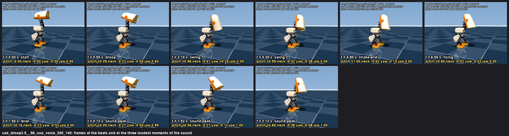
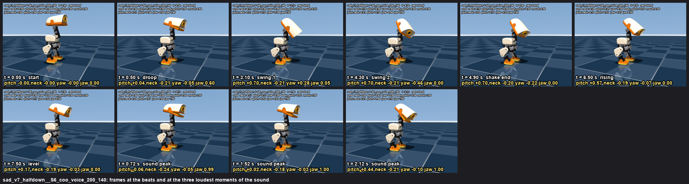
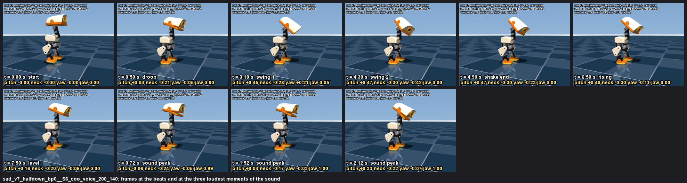

sad v7: half depth, lift first. Devastated is decided (devastated_3x1.0 + D3v2_sobs_gentler). Previous round: v6.
Remi's notes: three swings not four; sad slower and its sound only once the tilt is nearly done; the beak moves with the sound.
The mouth is driven by the wav's loudness (RMS at 50 Hz, 60 ms smoothing, fully open at 60% of the peak, 0.15 s delay) through the same mouth intent the robot accepts.
Simulation (640x480, 30 fps). Motions and json: /Users/remi/microduck/notes/emotions/motion/sadness/v2/. Spec: v2_spec.json.
Remi tested v6 on the robot: the full droop makes the head too heavy and the duck walks forward to keep its balance. v7 keeps the 2.5 s droop and its speed but halves the net depth: the head first lifts 0.25 (beak up, neck still) over 0.625 s, then descends 0.75 over 1.875 s to head_pitch +0.5 / neck -0.75. Two silent swings at 3.1 / 4.3 s, hold, rise 5.5-7.5 s, the decided coo voice unchanged. Two variants: body pitch 0.05 (as decided) and 0 (no bow). The trunk's forward drift is measured on each card, including the v6 card.
beats: droop 0.0-2.5 s · swings at 3.1, 4.3 s (shake 2.5-4.9) · hold to 5.5 · rise 5.5-7.5 s · 8.3 s
sound: the decided v6 sad: full droop, the one the robot walked forward on
trunk forward drift: end -0.1 cm, max +0.4 cm (min -0.8) · head_pitch joint from -0 to +57 deg, neck -24 deg
measured: no fall · 2 swings (yaw joint at the extremes [0.28, -0.38]) ·
head 98% down at the first swing · head_pitch +57 deg, neck -24 deg ·
mouth first opens at 0.36 s, jaw max 1.00, in silence 0.08
beats sheet · keyframes json (with mouth) · silent mp4

droop: head first rises 0.25 (head_pitch -0.25, neck 0) over 0.625 s, then descends 0.75 over 1.875 s to a net half depth (head_pitch +0.5, neck -0.75); same speed and 2.5 s as before
beats: droop 0.0-2.5 s · swings at 3.1, 4.3 s (shake 2.5-4.9) · hold to 5.5 · rise 5.5-7.5 s · 8.3 s
sound: the decided coo voice, unchanged
trunk forward drift: end -0.0 cm, max +0.4 cm (min -0.3) · head_pitch joint from -6 to +40 deg, neck -14 deg
measured: no fall · 2 swings (yaw joint at the extremes [0.28, -0.46]) ·
head 99% down at the first swing · head_pitch +40 deg, neck -14 deg ·
mouth first opens at 0.36 s, jaw max 1.00, in silence 0.08
beats sheet · keyframes json (with mouth) · silent mp4

droop: head first rises 0.25 (head_pitch -0.25, neck 0) over 0.625 s, then descends 0.75 over 1.875 s to a net half depth (head_pitch +0.5, neck -0.75); same speed and 2.5 s as before
beats: droop 0.0-2.5 s · swings at 3.1, 4.3 s (shake 2.5-4.9) · hold to 5.5 · rise 5.5-7.5 s · 8.3 s
sound: the decided coo voice, unchanged
trunk forward drift: end -0.2 cm, max +0.4 cm (min -0.5) · head_pitch joint from -6 to +27 deg, neck -17 deg
measured: no fall · 2 swings (yaw joint at the extremes [0.21, -0.42]) ·
head 95% down at the first swing · head_pitch +27 deg, neck -17 deg ·
mouth first opens at 0.36 s, jaw max 1.00, in silence 0.08
beats sheet · keyframes json (with mouth) · silent mp4

{kind=link}
{kind=link}
{kind=link}